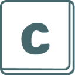
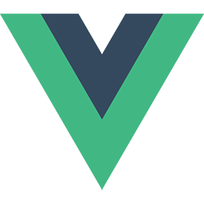

Hello, my name is Wei Wen, Goh.
I'm currently a sophomore at the National University of Singapore, reading Computer Science. I'll be graduating in May 2020 with specializations in Programming Languages and Artificial Intelligence.
My experience is primarily in front-end and back-end web development, but I'm open to any software engineering or data science position.
Let me know if you want to have a chat!
Education
Here's a peek into my formal education so far:
National University of Singapore Aug 2016 - Present - Bachelor of Computing in Computer Science. GPA: 4.70/5.00 (First Class Honours)
- Tutor for CS2103 Software Engineering (Spring 2018)
- Advisor for NUS Orbital 2018
- Notable modules:
- CS3216 Software Product Engineering for Digital Markets
- CS3230 Design and Analysis of Algorithms
- CS3243 Introduction to Artificial Intelligence
- CS3244 Machine Learning
- CS3234 Logic and Formal Systems
Singapore Polytechnic Apr 2011 - Apr 2014 - Diploma in Chemical Engineering. GPA: 3.67/4.00
- Diploma-Plus Certificate in Engineering Mathematics and Science
Professional Experience
I've been programming professionally for a bit:
Government Technology Agency of Singapore (GovTech), Data Engineer Intern Dec 2017 - Jan 2018 - Implemented and released public APIs for Data.gov.sg portal using Node.js with AWS Lambda and DynamoDB.
- Minimized AWS Lambda costs by benchmarking, profiling and optimizing slow-running Node.js scripts.
- Developed and deployed SMS-based medicine reminder solution targeted at middle-aged users.
Ethereum Tech, Freelance Web Developer Oct 2017 - Dec 2017 - Created the front-end of a cryptocurrency mining analytics dashboard with Vue.js.
- Suggested and implemented improvements to user experience from client's original design.
Ministry of Defence (Singapore), Personnel Systems Analyst Dec 2014 - Aug 2016 - Simulated and analysed personnel movement using complex system dynamics simulations.
- Wrote VBA macros and SQL queries for Microsoft Access, Excel and Word.
Alpha Consulting Engineers Private Limited, System Administrator Mar 2014 - Jul 2014 - Administered Windows servers and clients using IIS and Active Directory.
- Redesigned homepage using HTML5, CSS and JavaScript.
- Implemented features in the intranet page using jQuery, PHP and MariaDB/MySQL.
- Decompiled and modified legacy JavaServer Pages application.
Projects
Here are some interesting projects I've worked on in the past:

Pear Oct 2017 - Nov 2017 - Progressive Web App (PWA), iOS and Android app where users matchmake their friends.
- Pear won 2nd prize in NUS's 11th School of Computing Term Project Showcase (STePS).
- Led front-end development using Vue.js and Cordova.
- Released app to iOS App Store and Google Play Store, hit 300 users within 24 hours.
- Source: github.com/Pear-App/pear-client, Info: 11th STePS submission
- 
collaborate! Jun 2017 - Aug 2017 - Real-time collaborative webapp that simulates a table top discussion.
- collaborate! won honorable mention in the advanced category of NUS School of Computing's Orbital 2017.
- Led front-end development using React + Redux and Socket.io.
- Wrote and deployed back-end using Node.js and Koa.
- Source: github.com/goweiwen/collaborate, Demo: collaborate-app.herokuapp.com
- 
vue-swing Oct 2017 - Present - Vue.js component for swiping cards left and right, as seen in apps like Jelly and Tinder.
- Published on NPM and actively maintained.
- Source: github.com/goweiwen/vue-swing
ivle-sync Aug 2016 - Present - Automatically downloads files, announcements and webcasts from NUS's IVLE portal.
- Created and maintained application built in Python 3.
- Source: github.com/goweiwen/ivle-sync
A more comprehensive list can be found here.
Awards and Achievements
I have some awards to my name, too:
Yale-NUS Data 2.0 Datathon, First Place Mar 2018 - Studied viability of ride sharing in Singapore compared to public transport regarding carbon emissions using R.
NUS 11th School of Computing Term Project Showcase (11th STePS), Second PlaceNov 2017 - Pear won 2nd prize in NUS's 11th STePS for CS3216 Software Product Engineering for Digital Markets.
NUS Orbital Programme 2017 (Apollo 11), Honorable Mention Sep 2017 - collaborate! won an honorable mention in the advanced category of NUS School of Computing's Orbital 2017.
FOSSASIA 2017 Microsoft Mission Mars Challenge, Second Prize Mar 2017 DMG Excellence Award (Individual) Mar 2016 - Awarded by the Defence Management Group to individuals who have displayed exemplary attitude towards work.
Preferred Technologies
Here are some languages I'm confident in working professionally with:
- Languages: Python, JavaScript, HTML/CSS, Haskell, Golang, Kotlin, Scala, Java, PHP, SQL
- Technologies: Vue.js, React.js, Angular, jQuery, Elm, Node.js, Django, Laravel, Keras, TensorFlow
I'm a huge fan of trying out new technologies, so even if it isn't listed here, I might have used it for a pet project before.
Get in Touch!
Feel free to give me a call or drop me an email if you want to have a chat!